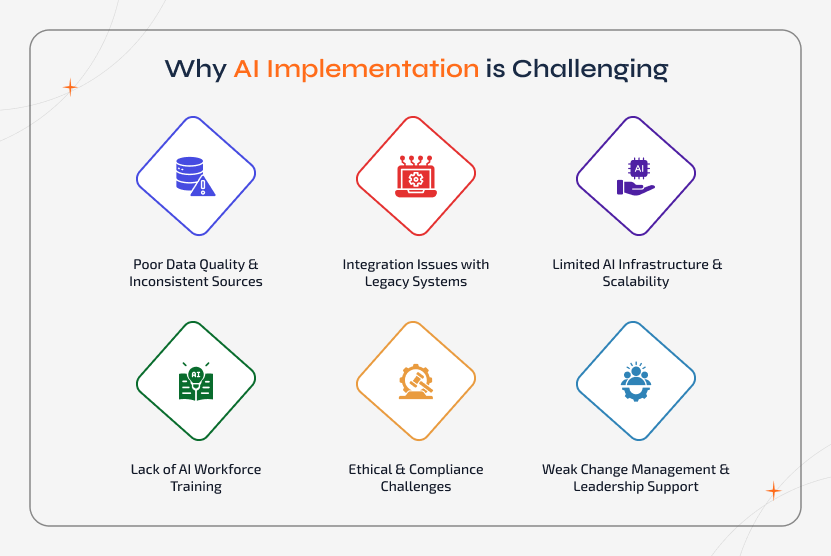
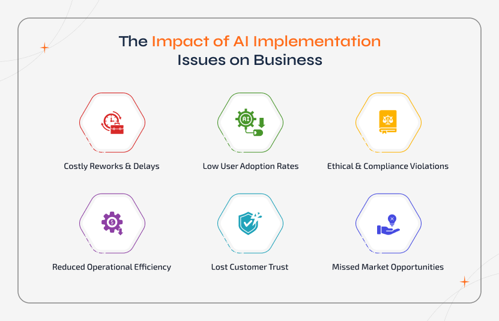
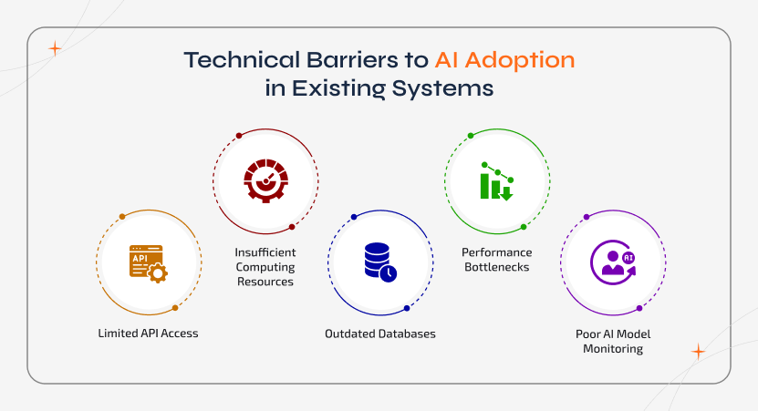
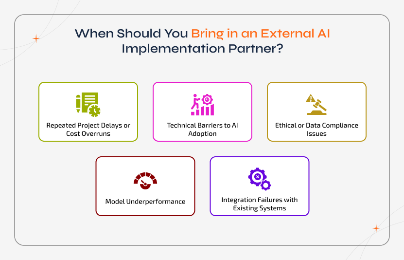

In the fast-paced digital world, Artificial Intelligence has been used across businesses of all types and is definitely transforming the way they operate, complete tasks, and deliver value. While the adoption of AI grows across industries, its obvious to see AI implementation issues that turn out to be a barrier to unlock its fullest potential. Nevertheless, from automating decision-making to driving predictive insights, AI is the backbone of digital transformation only when it is executed effectively.
It is obvious to see that many AI projects are failing to scale or deliver ROI due to poor integration, cluttered data, and unrealistic expectations. All of these issues not just slow down the innovation but also drain the budget and reduce confidence in the technology implementation.
For this reason, it is vital to explore AI implementation issues in detail, understand the causes, how they impact business outcomes, and how to fix them with proven, real-time strategies. Here in this blog, you will get to know the key challenges, practical solutions, and future-ready best practices to build scalable, secure, and business-driven AI systems that drive measurable outcomes.
What is AI Implementation?
AI implementation is nothing but the process that involves integrating artificial intelligence into real business operations. Through this process, everyday business workflows are enhanced to improve efficiency, enable better decision-making, and drive automation. Technically, AI implementation involves a structured AI adoption process that begins with defining clear business goals, preparing and managing data, developing AI models, and deploying them into real-world systems.
A successful AI project implementation is not just about using the right technology. Rather, it is all about aligning AI with business goals, integrating it smoothly into daily workflows, and continuously tracking down its performance. When this is done correctly, it helps companies fix common AI implementation issues including data silos, limited expertise, and unclear ROI.
In simple terms, AI implementation is something that bridges the gap between innovation and execution. This, in turn, redefines AI ideas into scalable and result-driven solutions that provide long-term growth.
Why AI Implementation is Challenging
Unlike deploying those traditional software, implementing AI is not easy. It is a complex process and AI requires continuous learning, large datasets that are of best quality, and deep integration that works across multiple business functions. As a result, many of the organizations find it difficult to move further beyond the pilot projects and achieve real business impact.

The most common AI implementation challenges include:
1. Poor Data Quality & Inconsistent Sources
AI systems
require clean and well-structured data. Whenever the data used is inaccurate,
fragmented, or comes from disconnected systems, it results in weak model performance
and decision-making. Thus, it is vital to ensure robust data governance to overcome
this barrier.
2. Integration Issues with Legacy Systems
Most often,
outdated infrastructure and old platforms make AI integration in business workflows difficult.
Without the proper APIs and right tools, companies often struggle to connect AI
solutions with their existing software systems like CRMs, ERPs, and databases.
3. Limited AI Infrastructure & Scalability
To perform
effective AI project implementation, it is vital to have powerful computing, secure
cloud systems, and flexible storage. Many of the companies are still lacking the
right setup to proceed with processing large amounts of data or run AI models in
real-time.
4. Lack of AI Workforce Training
One of the major AI
adoption challenges include the shortage of skilled professionals. It is vital for
teams to have practical knowledge in data science, model optimization, and ethical
AI practices to work and improve the AI systems effortlessly.
5. Ethical & Compliance Challenges
AI automates the
decisions and it should handle data privacy, bias, and transparency with careful
considerations. Hence, businesses are required to follow global and local
regulations like GDPR to stay compliant and build user trust.
6. Weak Change Management & Leadership Support
Often, even the strong AI project can fail when there is no
proper communication and leadership support. Successful AI implementation involves
all about uniting teams, setting up achievable goals, and encouraging an open,
innovative mindset.
Solve Your Implementation Issues with AI the Right Way
Overcome common roadblocks with expert guidance and proven deployment strategies.
Top AI Implementation Issues Business Must Understand
Despite the rising adoption, AI implementation issues continue to appear and limit the real-world success. Most of the time, problems arise due to data quality gaps, poor integration, lack of expertise, and weak governance frameworks. Given below are the most common and recurring AI implementation challenges businesses are facing in the digital landscape.
1. Data Quality and Availability Problems
AI systems are
highly dependent on clean, structured, complete, and unbiased data. So, when the
data obtained is inaccurate, outdated, or unstructured, it often leads to machine
learning implementation issues and poor model performance. Many organizations face
data quality issues in AI systems that often slow down the adoption and impact the
ROI.
How Sparkout Solves It:
- Our expert team builds strong data pipelines with automated validation, cleaning, and labelling frameworks. We ensure your AI models are trained on high-quality and well-structured data. Thus, we help businesses improve the accuracy, reduce bias, and drive reliable business outcomes.
2. Integration Difficulties with Existing Systems
Modern
AI tools often get into clash with the outdated infrastructure. These AI integration
challenges occur whenever algorithms fail to communicate properly with the legacy
CRMs, ERPs, and databases. Without proper APIs or middleware, businesses have to
face data silos and operational inefficiencies.
How Sparkout Solves It:
- Our engineers are specialized in end-to-end AI system integration and leverage APIs, middleware, and microservices. We ensure your AI solutions work smoothly with your existing tech stack without causing any disruption to the ongoing operations.
3. High Cost of AI Implementation and Maintenance
The cost
of AI implementation will rise to an extent that you never imagined due to unplanned
infrastructure, maintenance, and retraining needs. So, when there is no proper
cost-optimized roadmap, businesses need to spend more than the estimated budget.
How Sparkout Solves It:
- At Sparkout, we focus on cost-efficient architecture design using scalable cloud environments and modular deployment models. Thus, our consultants will create detailed AI budgeting and ROI strategies that will help you gain long-term value without overspending.
4. Lack of Skilled Talent & Organizational Readiness
There
is a shortage of AI talents and this remains the major AI adoption challenge so far.
AI being an emerging technology, businesses need to find skilled professionals who
are capable of understanding data science, machine learning models, and ethical
frameworks. Without skilled talent, there is a high chance that even very
well-funded AI initiatives will fail to scale.
How Sparkout Solves it:
- This AI implementation issue is resolved in Sparkout by providing end-to-end support with a dedicated AI team. We don't stop there, rather our support includes knowledge transfer sessions, staff enablement programs, etc. Our experts will guide your in-house teams in efficiently managing, retraining, and scaling AI models confidently.
5. Ethical and Governance Challenges
The next risk in AI
adoption includes ethical challenges in AI implementation. This includes fairness,
transparency, and data privacy risks. When the governance structure is inconsistent
or there is a lack of compliance monitoring, then this leads to biased decisions and
regulatory penalties.
How Sparkout Solves it:
- We integrate governance frameworks into every AI project and thereby ensures data ethics, regulatory compliance like GDPR and model transparency. As we follow responsible AI practices, you can build systems that users can trust with our support.
6. Scalability and Maintenance Challenges
Many of the AI
pilots have proceeded to reach the production stage due to poor scalability planning
or lack of AI lifecycle management frameworks. The key to overcome AI scalability
challenges include continuous retraining, versioning, and infrastructure
optimization.
How Sparkout Solves it:
- We craft AI systems that are built to scale using containerized deployments, automated scaling, and continuous integration pipelines. Our MLOps frameworks provide seamless maintenance, upgrades, and consistent performance even with heavy data loads.
7. Inadequate Data Governance Frameworks
When there are no
solid data governance frameworks, AI data management challenges start appearing. Due
to this, the AI projects can become inconsistent and unreliable. When the data
ownership is unclear, it leads to confusion, poor model accountability, and trust
issues across departments.
How Sparkout Solves it:
- We at Sparkout build AI-ready data ecosystems that come with clear governance policies. Our experts offer data lineage tracking, access control, and compliance frameworks that align with GDPR and ISO standards. This way, we ensure your AI pipelines stays clean, secure, and trusted.
8. Unclear AI Strategy and Business Alignment
Yet another
biggest implementation issue in AI is the lack of a clear roadmap that allows AI
investments to measurable business outcomes. Without defined KPIs or a structured AI
adoption plan, enterprises get into risk of building isolated experiments that never
scale or deliver ROI.
How Sparkout Solves it:
- To better tackle this, we start every engagement with a discovery and strategy workshop. Our AI consultants work with your leadership team closely and define the right use cases, prioritizes goals, and align AI projects with long-term business outcomes. This way, we ensure every AI initiative brings in measurable value.
9. Limited Computing Resources
AI workloads need a massive
processing power, high-speed GPUs, and scalable cloud environments. Many
organizations face computing limitations that can slow down the training, testing,
and deployment of the AI models. So, when there is no adequate infrastructure, even
well-designed models will provide poor performance in the real-world.
How Sparkout Solves it:
- To better deal with these AI infrastructure implementation issues, we help businesses use cloud-native AI infrastructure, distributed computing, and optimized model architectures. Our team ensures that your AI implementation is cost effective and performance ready despite different workloads.
10. Lack of Explainability and Transparency
A major AI
implementation issue is the black box nature of many AI models. i.e., the reasoning
behind predictions or decisions stays unclear. This lack of explainability brings in
trust issues especially in finance, healthcare, and other regulated sectors where
accountability matters the most. Without transparency, teams often struggle to
justify AI-driven outcomes to the stakeholders.
How Sparkout Solves it:
- We design AI solutions with complete transparency and built-in interoperability features. With explainable AI (XAI) frameworks, we ensure model decisions are traceable and transparent. Our team ensures compliance, stakeholder trust, and ethical AI operations at every level.
11. Biased Algorithms and Model Drift
Most often, those
hidden biases in training data will lead to unfair or inaccurate AI predictions.
When the real-world data changes over time, model drift can further reduce the
accuracy. All these issues make AI systems less reliable and harder for the users to
trust.
How Sparkout Solves it:
- By using AI bias detection and continuous model drift management frameworks, we identify, retrain, and recalibrate models every now and then. Our data science team provides fairness, transparency, and ongoing performance consistency across the production environments.
12. Poor Cross-Functional Collaboration
AI initiatives
require seamless collaboration between the data scientists, engineers, and business
stakeholders. If these teams operate in silos, then communication gaps and unclear
ownership will derail AI project implementation.
How Sparkout Solves it:
- We make sure to follow cross-functional AI collaboration through agile processes, clear governance, and centralized communication tools. Our integrated project management approach aligns the technical and business goals to help enterprises proceed from prototype to production faster.
13. Unrealistic Expectations and Hype
A lot of businesses
are looking for AI implementation due to overhyped expectations and hoping for
instant transformation. Whenever the outcomes don't match the hype, projects
eventually lose the support and credibility. This is one of the most overlooked AI
implementation challenges.
How Sparkout Solves it:
- To better deal with this, we establish a realistic AI roadmap based on your data readiness and business maturity. Our consultants ensure to set achievable milestones and success metrics. With this, we help organizations build sustainable AI capabilities without wasting investments.
14. Vendor Dependency and Lack of In-House Control
When
businesses over rely on external vendors or prebuilt models, it can limit the
flexibility, scalability, and innovation. Without internal expertise, enterprises
risk vendor lock-in and limited visibility into how AI systems operate.
How Sparkout Solves it:
- We help organizations with AI ownership by building in-house skills, developing custom AI models, and ensuring full data control. Our goal is to make your enterprise self reliant and make sure you maintain vendor flexibility and compliance.
15. Inconsistent Evaluation Metrics
Many times, a lot of
organizations fail to define clear KPIs to measure AI performance or ROI. Without
consistent evaluation metrics, it becomes difficult to assess the progress, validate
success, and scale effectively. This inconsistent evaluation becomes one of the AI
implementation issues.
How Sparkout Solves it:
- We fix up this issue by designing transparent AI performance measurement frameworks that connect to your business goals. From model accuracy to ROI tracking, we follow a structured evaluation approach to ensure your AI investments offer measurable value over time.
The Impact of AI Implementation Issues on Business
Whenever AI implementation issues aren't managed well, they don't just affect the technology but also impact the entire business results directly. From poor decision-making and compliance to customer satisfaction, these problems can often lead to major operational and financial setbacks.

Some of the common impacts include:
1. Costly Reworks & Delays
Due to poor planning or data
errors, businesses often end up rebuilding models and this in turn increases the
project timelines and expenses.
2. Low User Adoption Rates
When there is no trust and
usability, teams will hesitate to rely on AI tools. This, in turn, reduces the
overall ROI.
3. Ethical & Compliance Violations
Weak data governance
or bias will make businesses to face legal risks and damage the reputation amongst
the clients.
4. Reduced Operational Efficiency
When the models are
inconsistent or integration is poor, it often slows down the workflows instead of
optimizing them.
5. Lost Customer Trust
Biased outputs and inconsistent
models will completely remove the confidence among the clients and end users.
6. Missed Market Opportunities
When the AI systems
underperform, enterprises will lose the agility to act on real-time insights or
trends.
Put together, all of the above AI deployment challenges will slow down the digital transformation, increase costs, and weaken your organization's competitive advantage for a long run.
Struggling with AI Implementation Setbacks?
Turn project delays & inefficiencies into opportunities for smarter, scalable AI success.
The Hidden Costs of Poor AI Implementation
Although an AI project looks successful, hidden costs will reduce its overall ROI silently. These expenses often appear due to poor planning, unclear goals, and rushed implementation.
The common hidden costs include:
- Complex or over-engineered solutions often deliver very little real business value.
- Overspending on cloud storage by not optimizing storage or computing resources properly.
- Frequent updates and model retraining will eventually drain time and resources.
- Spending additional costs for storing, cleaning, and securing large datasets.
- Upon relying heavily on specific platforms makes future changes costly and difficult.
Upon identifying these hidden costs early, companies can refine their AI adoption strategy and focus on building long-term sustainable value from their AI investments.
Technical Barriers to AI Adoption in Existing Systems
Existing legacy software and outdated IT environments will create major roadblocks for AI adoption. These are older systems that weren't built to handle large datasets, real-time analytics, or the high processing power that AI requires. Hence, integration becomes slow, complex, and costly. This in turn delays the overall AI transformation strategy.

Common technical barrier include:
1. Limited API Access
- Old systems lack modern APIs and this makes it hard for AI models to exchange the data.
2. Insufficient Computing Resources
- Existing infrastructure is not capable of handling heavy AI workloads and large-scale model training.
3. Outdated Databases
- Older data formats and systems will limit how easily data can be prepared for AI usage.
4. Performance Bottlenecks
- Using AI across hybrid or on-premise environments often leads to latency and reliability issues.
5. Poor AI Model Monitoring
- Legacy tools rarely support real-time performance tracking or model updates.
To overcome these AI deployment challenges, companies need a clear modernization roadmap. Choosing scalable, cloud-based systems helps them integrate AI easily, improve processing speed, and manage data efficiently. With cloud infrastructure, it is possible to get ongoing updates, better performance monitoring, and faster innovation support. This makes it easier to scale AI solutions when business needs and technology evolves.
Best Strategies to Prevent AI Implementation Failures Before They Happen
Avoiding AI implementation failures begins with planning, alignment, and continuous improvement. A lot of projects fail not because of weak technology, but also due to unclear goals, poor data management, and lack of collaboration. With a structured and proactive approach, enterprises get the change to build AI systems is capable of performing reliably and scale effectively.
Best Practices Include:
1. Create a Clear Enterprise AI Roadmap
- Begin with defining your vision, goals, and success metrics before development begins.
2. Strengthen Data Governance & Quality Control
- Make sure your data is clean, accurate, and compliant to improve AI reliability.
3. Encourage Cross-Functional Collaboration
- Ensure to align IT, data science, and business teams to improve communication and accountability.
4. Create AI Project Risk Management Frameworks
- It is vital to find the potential failures early by following monitoring, testing, and contingency plans.
5. Invest in Scalable AI Infrastructure
- Businesses can choose flexible, cloud-based architecture that can support growing data and processing needs.
6. Partner with Experienced AI Consultants
- By getting expert guidance, it is possible to implement best practices and avoid costly mistakes.
By following the above strategies, enterprises stay away from risks, streamline AI adoption, and ensure every project delivers measurable business value.
Mid-Project AI Recovery - How to Get Your Implementation Back on Track
If in case your AI project is facing challenges mid-way, it doesn't mean a failure. Often, many AI initiatives struggle in the middle due to unclear goals, poor data quality, and integration issues. However, this can be dealt better with the right steps and businesses can recover and get back on track.
Here is how to realign your AI project:
- Audit the existing models and pipelines to find the gaps in data quality, model performance, and system integration.
- Revisit your AI strategy and scope to make sure your project goals are still aligning with your business needs and available resources.
- Clean, structured, and well-connected data systems help remove recurring AI integration issues.
- Redesign the systems for better performance, ethical transparency, and future growth.
- By bringing in experienced AI implementation consultants, you can find the problems at the earliest and apply the best practices.
Thus, even with a structured, mid-project recovery plan, businesses can transform a struggling AI system into a high-performing solution that delivers long-term business value and competitive advantage.
Is Your AI Project Stuck Midway?
Recover faster with our expert-led audits, strategy realignment, and proven AI implementation practices.
When Should You Bring in an External AI Implementation Partner?
There may be times, your AI projects reach a point where internal teams find it difficult to proceed further. It is during this stage bringing in an external AI implementation partner can help businesses save time and improve ROI.

You should consider expert support when your encounter:
1. Repeated Project Delays or Cost Overruns
If your
timelines and budgets keep slipping due to unclear scope and inefficient execution,
then it is time to connect with external partners for AI implementation.
2. Technical Barriers to AI Adoption
Whenever your existing
legacy systems, poor data quality, or lack of ML expertise slow down the progress,
you shall reach out to experts who can handle it.
3. Ethical or Data Compliance Issues
It's time to bring an
AI implementation partner if you are struggling to align your AI models with
changing privacy & regulatory standards.
4. Model Underperformance
If the predictions aren't
accurate and outputs aren't consistent or business outcomes aren't bringing any
improvements, then it's time to check for external implementation partners.
5. Integration Failures with Existing Systems
The AI
components don't sync well with your data pipelines, APIs, or enterprise platforms,
so you can reach out to experts for better implementation.
A seasoned AI implementation partner can find the project weakness, redefine success metrics and apply proven frameworks. This way, they ensure your AI solution begins its journey from experimentation to enterprise-grade execution.
How Sparkout Drives Success in Complex AI Implementations
At Sparkout, we don't just create AI solutions, rather we ensure they create real, measurable results for your business. Our team helps companies fix complex AI implementation issues and scale their systems across enterprise setups.
We begin with a full audit to find data and integration gaps. Then, we build custom AI solutions that fit into your existing systems easily. We ensure your projects move from pilot to production stage without any disruptions.
Upon focusing on compliance, transparency, and continuous improvements, we help businesses cut down costs, boost performance, and achieve measurable AI success.
Benefits of Partnering With Experienced AI Implementation Experts
Sparkout is one of the leading AI development and implementation companies and working with us means you get more technical support. Our team of AI experts are committed to your AI success and here is what we are renown handling:
- With proven AI frameworks, we make structured processes that help reduce risks and ensure on-time delivery.
- By leveraging strong data governance, we ensure to improve data accuracy, privacy, and compliance at every stage of your AI project.
- We design and implement secure, high-performance AI systems that are built for growth.
- Our team offers full lifecycle support with continuous monitoring, optimization, and maintenance for lasting results.
- With expertise in real-world AI deployment, we implement AI solutions that deliver measurable results across multiple industries.
Case Study - Reviving a Stalled Enterprise AI Project
Challenge:
TravelHero, a growing travel-tech startup, faced
major implementation issues with AI during the mid-phase of its development. Their
AI travel chatbot struggled with data errors, poor API integration, and inconsistent
responses, which slowed down their entire project.
Our Solution:
Our team at Sparkout helped them fix the data
quality problems, rebuild the system for better scalability and accuracy, and
streamline the AI model. We also improved the integration across booking and travel
platforms to make the project work seamlessly.
Result:
The AI travel chatbot was launched successfully,
and it is helping users plan and book trips faster with accurate, personalized
suggestions. This improved experience boosted user engagement and reliability.
TravelHero, an ambitious travel-tech startup, faced major implementation issues with AI during the mid-phase of development. Their AI travel chatbot struggled with inaccurate responses, fragmented data sources, and inconsistent integration with booking APIs—causing significant project delays and reduced usability.
Facing Similar AI Implementation Issues?
Partner with Sparkout to turn your stalled AI project into a success story with expert guidance and seamless implementation support.
Conclusion
Whether you are facing AI implementation at the start or in the mid-way, you shall turn your AI challenges into growth opportunities. With the right partner like Sparkout, you can uncover hidden issues, streamline integrations, and rebuild your AI systems for better performance, scalability, and measurable ROI. With this blog, you shall not let technical roadblocks hold your business back. Transform your AI vision into real business impact.